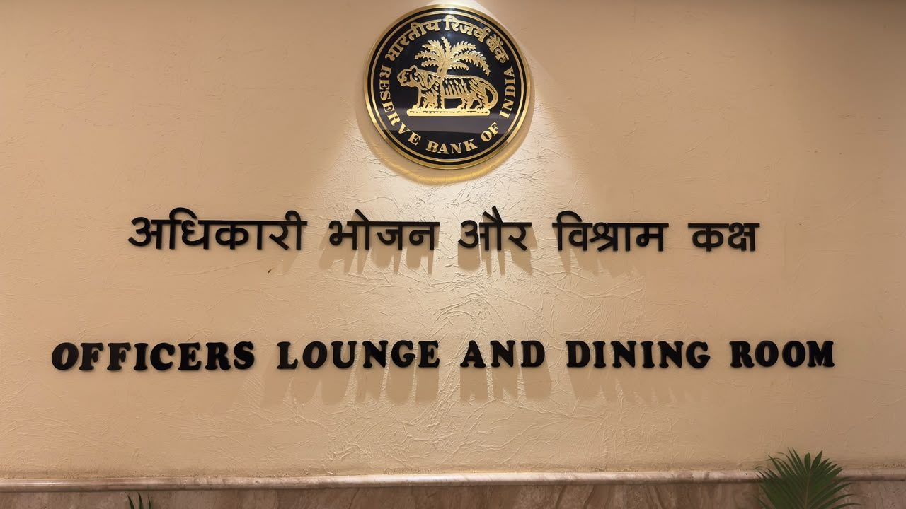
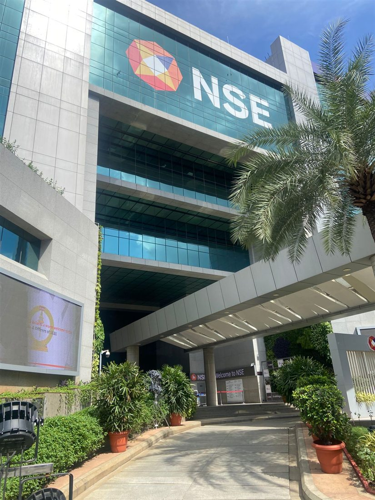
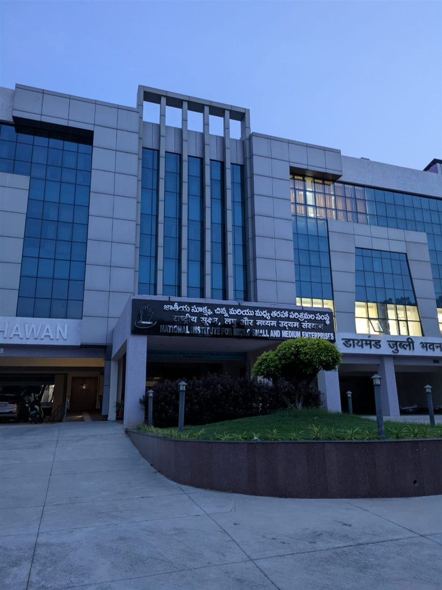
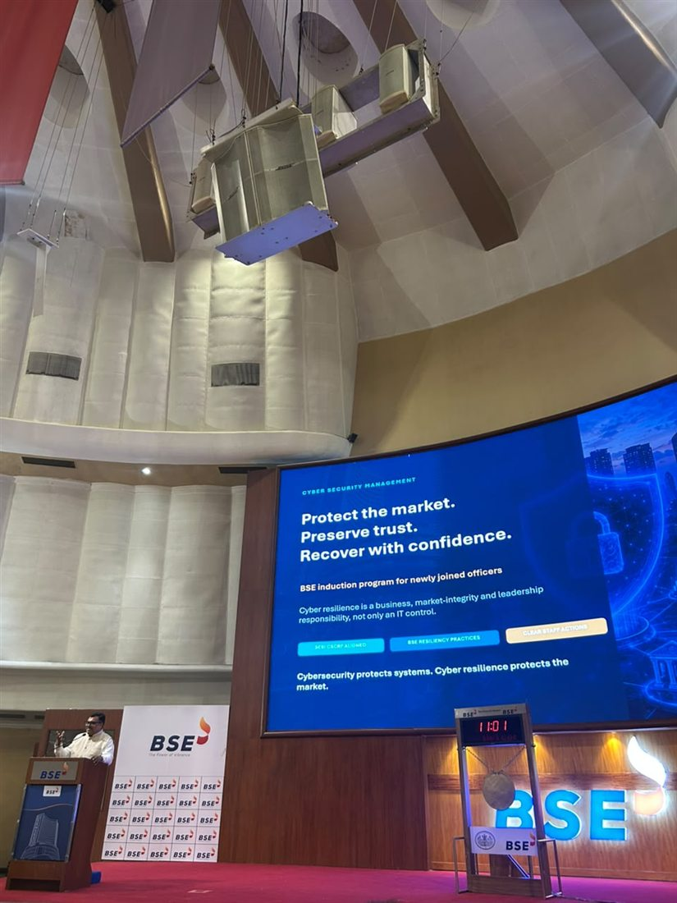

Albums / Visits & attachments
Institutional visit
RBI Visit
Photographs from the batch's visit to the Reserve Bank of India.
Inside this chapter
A place in our shared story.
Photographs from the batch's visit to the Reserve Bank of India. This collection brings the photographs together so the batch can revisit the experience, frame by frame.
- An institutional visit
- The batch together
- A part of our learning journey
From our yearbook
Familiar faces. Shared memories.


Another chapter awaits
Keep wandering.

10 photosVisits & attachmentsNSE Visit Learning inside a core Indian market institution.
29 photosVisits & attachmentsHyderabad Attachment Institutional exposure and shared travel memories.
5 photosVisits & attachmentsBSE Visit A day at the historic heart of Dalal Street.